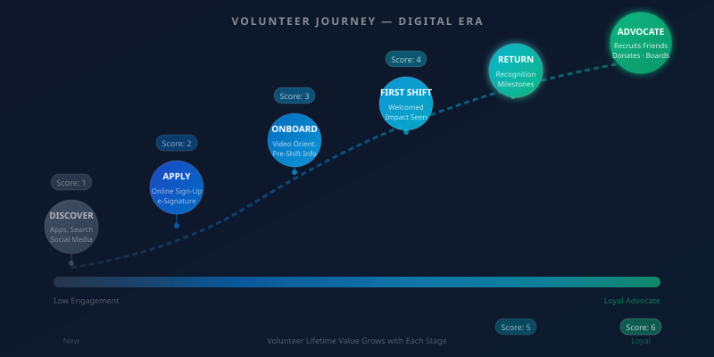

Volunteers are the operational backbone of most food banks — and they are harder to recruit and retain than they were five years ago. The expectations volunteers bring to the experience have changed, shaped by the digital ease they encounter in every other part of their lives. Organizations that meet those expectations build volunteer programs that grow. Those that do not find themselves in a continuous recruitment cycle that never gets ahead of turnover.
The core shift is this: volunteers no longer look for opportunities the way they used to. They do not call a number on a flyer or show up at a booth at the county fair. They search, they scroll, they compare. Your food bank's digital presence — your website, your volunteer app profile, your social media visibility — is your recruitment infrastructure. If that infrastructure is weak, your volunteer pipeline is weak, regardless of how many hours you spend on outreach.
Where Volunteers Find Opportunities Today

Volunteer recruitment platforms have consolidated significantly. VolunteerMatch, Idealist, and All for Good aggregate opportunities and surface them to people actively looking to give their time. Galaxy Digital and JustServe serve specific community networks. LinkedIn is increasingly important for skilled volunteers and corporate volunteer program coordination. And Google search — particularly the volunteer opportunity rich results that appear when someone searches "volunteer near me" — is a high-intent discovery channel that most food banks underinvest in optimizing.
Corporate volunteer programs represent one of the most underutilized recruitment channels available to food banks. Large employers actively seek community organizations that can absorb group volunteer days, provide meaningful work, and document the experience for their internal reporting. A food bank that can offer a well-organized, impactful volunteer day for a corporate group — with professional coordination, clear impact reporting, and a simple repeat booking process — gains a reliable source of high-volume, motivated volunteers at almost no acquisition cost.
Digital Onboarding That Sets Volunteers Up to Succeed
The first experience a new volunteer has with your organization is the onboarding process, and it communicates everything about how much you value their time. A paper form handed across a folding table, a disorganized orientation with no clear takeaways, and a day-of-shift assignment to a task no one explained — these experiences do not just produce a poor first shift. They produce a volunteer who does not return and who does not recommend your organization to friends.
Digital onboarding starts before the first shift. E-signature tools replace paper forms for background check authorizations and photo releases. Video orientations — even simple recordings — allow volunteers to learn the facility layout, safety protocols, and mission context on their own schedule rather than adding forty minutes to an already long first-day experience. Pre-shift instructions delivered by text or email the evening before answer the questions every new volunteer has: Where do I park? What should I wear? Who do I ask for?
These small improvements have measurable effects on first-shift completion rates and return rates. Volunteers who feel prepared show up. Volunteers who feel welcomed by an organization that clearly invested in their experience return.
Scheduling and Communication
Scheduling friction is one of the most consistent reasons volunteers disengage. When signing up for a shift requires calling during business hours, waiting for a confirmation email, or navigating a website that does not work on mobile, some percentage of willing volunteers will give up before they complete the process. Self-service online scheduling — with real-time slot availability, instant confirmation, and easy cancellation — removes that friction.
Communication quality matters as much as communication frequency. Volunteers who receive a generic "thank you for volunteering" message after every shift are not building a relationship with your organization — they are completing a transaction. Volunteers who receive specific acknowledgment of what they accomplished that day, updates on the impact their collective hours are producing, and occasional personal recognition from a coordinator they know by name are building something that keeps them engaged over months and years.
Recognition and Milestone Tracking
Recognition programs do not need to be expensive to be effective. Automated milestone notifications — a message when a volunteer reaches 10 hours, 50 hours, 100 hours — acknowledge commitment without requiring staff time to track manually. Birthday and volunteer anniversary messages personalize the relationship. An annual impact report that shows each volunteer how many pounds were distributed with their help makes the abstract feel concrete.
In Salesforce, these recognition workflows can be fully automated. Volunteer hours tracked against contact records, milestone thresholds configured as formula fields, and Flow automations that trigger thank-you emails at specific milestones — with personalized content that reflects the volunteer's history with your organization. The technology does not replace the human relationship between your staff and your most committed volunteers. It handles the routine recognition that would otherwise fall through the cracks, freeing staff to focus personal attention where it matters most.
Measuring Volunteer Lifetime Value
Forward-thinking food banks are beginning to think about volunteer engagement the same way they think about donor engagement — in terms of lifetime value. A volunteer who gives two hours once is one thing. A volunteer who gives four hours a month for five years, recruits three friends, makes an annual donation, and eventually joins your board represents a completely different kind of organizational asset.
Identifying the patterns that distinguish one-time volunteers from long-term advocates — and designing your engagement process to move more people along that continuum — is one of the highest-leverage things a food bank can do with its volunteer program data. The organizations that do this well are building community not just workforce capacity. And in a sector where trust and relationships are the foundation of everything, that distinction matters.